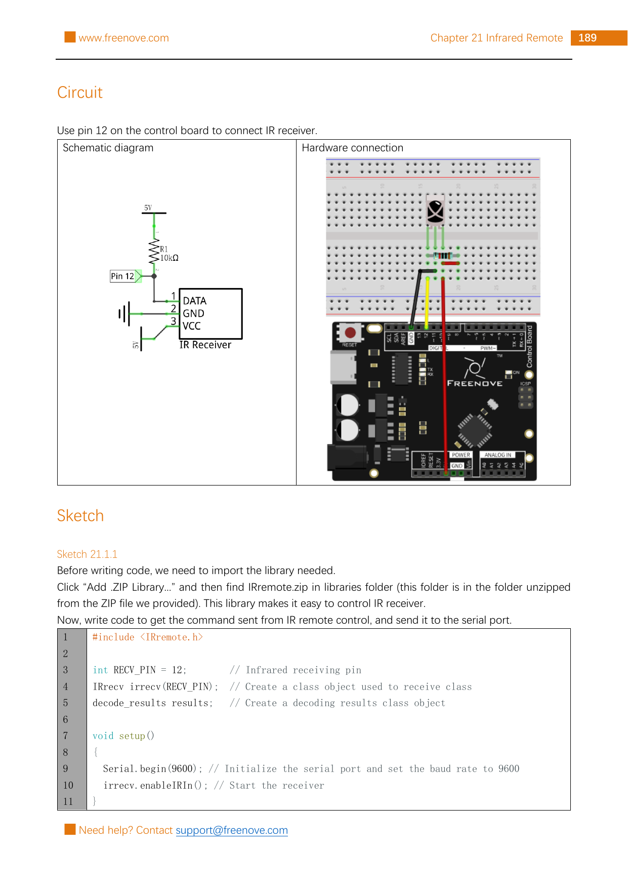

Wire the Freenove-style IR receiver circuit to D12, install a current IRremote library, and see a different hexadecimal value when you press different remote buttons.
Gather the parts
Uno-compatible board and USB cable
Breadboard
Infrared remote and the battery type marked on its holder
Three-pin infrared receiver with DATA, GND, and VCC identified by its maker
One 10 kΩ resistor
Four male-to-male jumper wires
Safety boundary: unplug USB before changing wires. This lesson is only for the low-voltage, labeled receiver circuit shown by the source. Do not connect a bare three-pin receiver just because it looks similar: do not assume a three-pin receiver has the same pin order. Do not guess its voltage, put it directly across a battery, or use mains/wall power. Follow the exact receiver datasheet when its labels or supply requirement differ. A remote’s coin cell can be swallowed and can cause severe injury; keep it away from children and pets. Do not short, heat, crush, disassemble, or recharge a coin cell. Stop if a component gets hot, smells unusual, or is damaged.
Build it, one check at a time
Step 1 — Learn what the receiver hears
The remote sends infrared light in a pattern when you press a button. The receiver turns that pattern into a signal on its DATA pin. The Arduino library measures that signal and tries to decode it. It is not magic identification: different remote models and protocols can produce different values, so your first job is to observe your remote rather than copy someone else’s button codes.

Reference image: Freenove Ultimate Starter Kit, Tutorial.pdf, Chapter 21, Project 21.1 circuit page (printed page 189; PDF page 193), an unchanged non-generated rasterization. Copyright Freenove; used under CC BY-NC-SA 3.0. The page shows the exact source circuit; it does not establish the pin order of an unlabeled or different receiver. The public tutorial and license are linked in Reference pages.
Step 2 — Make the four connections
Build only the source’s Project 21.1 circuit. Trace each connection with the board still unplugged:
Arduino 5 V → IR receiver VCC
Arduino GND → IR receiver GND
Arduino D12 → IR receiver DATA
10 kΩ pull-up resistor → between IR receiver DATA and Arduino 5 V
The resistor is a 10 kΩ pull-up resistor: it connects the DATA point to 5 V, not in series with the receiver’s power wire. Check that DATA reaches D12 and that the ground is common. If your receiver is a breakout module with a documented built-in pull-up or different markings, stop and use that exact module’s documentation instead of adding or omitting parts by guesswork.
Step 3 — Install the current decoder library
In Arduino IDE, open Library Manager and install IRremote by Armin Joachimsmeyer. This lesson deliberately uses the current library’s IRremote.hpp and IrReceiver interface. The old Freenove sketch uses a historical IRrecv interface from its included ZIP; do not mix examples from the two interfaces in one sketch. The current library begins receiving with IrReceiver.begin(), tests for a complete frame with IrReceiver.decode(), and puts the result in IrReceiver.decodedIRData.
Step 4 — Upload a tiny remote reader
Reconnect USB, choose your board and port, then upload this original teaching sketch. It preserves the Freenove Project 21.1 D12 circuit and 9600-baud monitor speed, while using the current IRremote API. It copies the decoded value before calling resume(), which enables the receiver to listen for the next frame.
What the lines mean:decode() becomes true after a complete frame. decodedRawData is a raw decoded value; command is a smaller interpreted command when the library recognizes the protocol. Write down which button you pressed beside the value you actually see. Do not treat a value from a different remote, protocol, or library version as a guaranteed match.
Step 5 — Test one button at a time
Point the remote’s front toward the receiver from nearby, press one button briefly, and watch for a line beginning raw: 0x. Try a second button and compare the result. Holding a button can create repeat frames, so start with short taps. If nothing appears, first replace or correctly install only the battery type marked by the remote holder, then unplug USB before rechecking the receiver labels, D12 path, resistor, and common ground. Bright sunlight and some lamps can add infrared noise; move away from them before changing code. Never use this reading-only lesson to control safety equipment, doors, appliances, or mains-powered devices.
Tiny challenge
Make a two-row table in your notebook: “button I pressed” and “value I observed.” Tap the same button twice, then a different button twice. Which values repeat? Do not add an output device yet; the next lesson can use a value you observed and verified.
The unchanged reference image is from Freenove and used under CC BY-NC-SA 3.0. The learner-facing instructions and clearly named teaching sketch are original. No physical hardware was tested for this lesson.